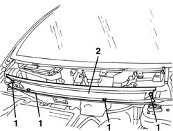

7035A55 WINDSCREEN BASE TRIM SUPPORT FRAME R & R
- Path
- Procedures > 70 FITTINGS > 7035 BODYSHELL WINDOWS > 7035A WINDSCREEN > 7035A55 WINDSCREEN BASE TRIM SUPPORT FRAME R & R
- Kind
- repair procedure (removal / refitting; the operation number is the code)
- Applies to
- all engines; production: da 06/04
- Interactive page
- https://sloeber94.github.io/elrnDB-fMltpl/en/#/186007251
Applies to: all engines; production: da 06/04
 Removing
Removing
 Refitting
Refitting- Undo the bolts.
- Remove the mounting.

Applies to: all engines; production: da 06/04
Refitting
Removing- Check that the support is not damaged.
- Position the support and secure it using the bolts.
- Op. 7210E22 WINDSCREEN BASE TRIM